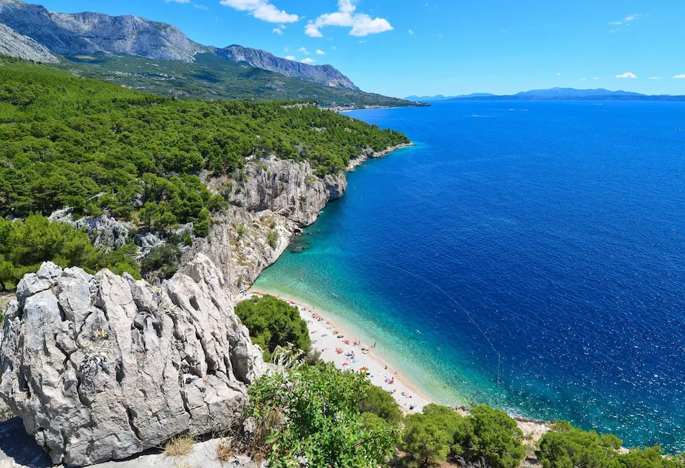

Podróżowanie
Moim zainteresowaniem jest podróżowanie. Zazwyczaj robię to z rodziną i przyjaciólmi. Byłam już w Rzymie, Watykanie, Turcji, Grecji, Słowacji, Hiszpani, na Korfu, na Majorce, w Chorwacji i kilku innych miejscach. Najbardziej podobało mi się na Majorce. Byłam tam trzy razy. Są tam piękne piaszczyste plaże, jaskinie, katedry, i kolorowe miasteczka. Jest tam też jeden z największych parków wodnych w Europie i oceanarium.
Blisko plaży były też skały, z których skakaliśmy do wody. Osobiście wolę podróżować samolotem, ponieważ jest to szybkie i wygodne, choć zdarzyło mi się też jechać za granicę samochodem. Chciałabym odwiedzić jeszcze Londyn, Francję, Japonię, Stany Zjednoczone, Kanadę i Egipt.
W następne wakacje najprawdopodobniej polecimy na Karaiby. Jest tam piękna przejżysta woda i dużo kolorowych ryb, których nie ma w Europie. Chciałabym również za rok pojechać na dwa tygodnie na wymianę do Stanów, najbardziej chyba do Nowego Yorku lub Californi. Jestem osobą, która woli morze niż góry i najczęściej podróżuję w ciepłe miejsca.